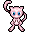
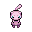

Pokédex / #151

Mew #151
Psychic
A Pokémon of South America that was thought to have been extinct. It is very intelligent and learns any move.
Generation 1 · Kanto

Stats
| Attack | 100 | |
|---|---|---|
| Defense | 100 | |
| Sp. Atk | 100 | |
| Sp. Def | 100 |
In the wild
| Wild level | 100–100 |
|---|---|
| HP | 100 |
| Experience | 17 |
| Egg groups | – |
Evolution
- Does not evolve.
Moves
| Level | Move | Type | Category | Power | Energy | Cooldown | Effect | |
|---|---|---|---|---|---|---|---|---|
| 1 | Tackle | Normal | Physical | 15 | 15 | 1s | Tackle is one of the most common and basic moves a Pokemon learns. It deals damage with no additional effects. | |
| 5 | Pound | Normal | Physical | 40 | 40 | 6s | Pound inflicts damage and has no secondary effect. | |
| 10 | Mega Punch | Normal | Physical | 80 | 80 | 12s | Mega Punch deals damage and has no secondary effect. | |
| 15 | Confusion | Psychic | Special | 50 | 60 | 12s | Confusion deals damage and has a 10% chance of confusing the target. | |
| 20 | Ancient Power | Rock | Special | 60 | 70 | 14s | Ancient Power inflicts damage and has a 10% chance of raising all of the user's stats by one stage. | |
| 25 | Metronome | Normal | Status | – | 80 | 20s | User performs any move in the game at random. | |
| 30 | Amnesia | Psychic | Status | – | 75 | 60s | Amnesia raises the user's Special Defense by two stages. | |
| 35 | Barrier | Psychic | Status | – | 100 | 60s | Barrier raises the user's Defense by two stages. | |
| 40 | Psychic | Psychic | Special | 90 | 100 | 21s | Psychic deals damage and has a 10% chance of lowering the target's Special Defense by one stage. | |
| 45 | Psyshock | Psychic | Special | 80 | 85 | 12s | The user materializes an odd psychic wave to attack the target. This attack does physical damage. | |
| 50 | Reflect Type | Normal | Status | – | 90 | 90s | The user reflects the target's type, making it the same type as the target. | |
| 55 | Solar Beam | Grass | Special | 120 | 125 | 27s | Solar Beam deals damage but the user can't attack on the next turn. | |
| 60 | Overheat | Fire | Special | 130 | 140 | 27s | An intense attack that also sharply reduces the user's SP. ATK stat. | |
| 65 | Hydro Cannon | Water | Special | 150 | 150 | 27s | Hydro Cannon deals damage but the user can't attack on the next turn. | |
| 70 | Blizzard | Ice | Special | 110 | 120 | 27s | Blizzard deals damage and has a 10% chance of freezing the opponent. |
Field abilities
DigRock ClimbStrengthWaterfallFindFlashBlinkTeleportFlyTransformRock SmashCutHeadbutt
Special abilities
Synchronize
Egg moves
None
Technical machines
Every technical machine
Drops
| Item | Amount | Chance | |
|---|---|---|---|
| Mind Plate | 1–10 | 100% | |
 | mew doll | 1 | 0.1% |
| TM 27 | 1 | 0.01% | |
| TM 32 | 1 | 0.01% |